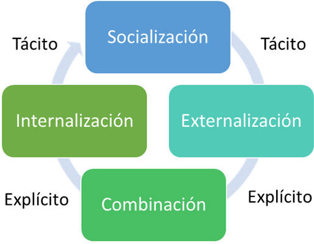
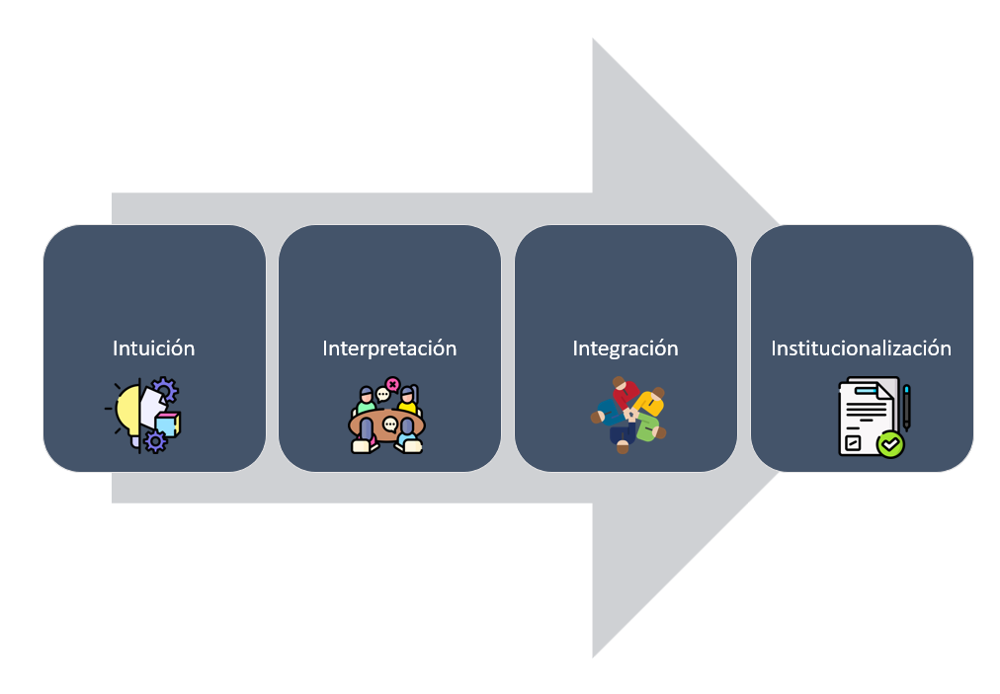
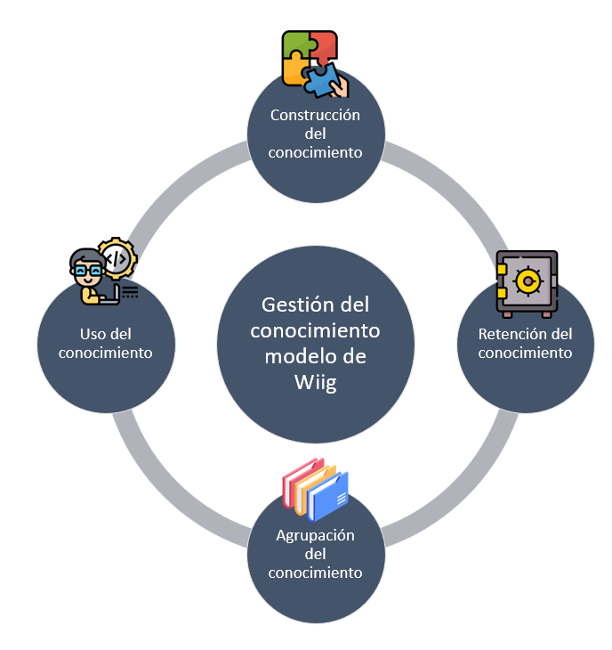
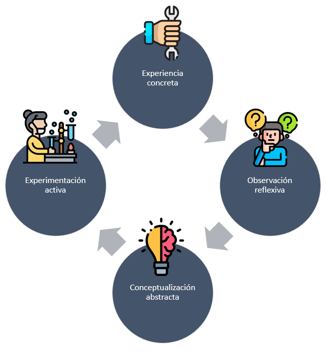

La Espiral de Aprendizaje: Integrando el Modelo SECI en la Transferencia de Conocimiento Formativo

Socialización:Los procesos formativos a menudo comienzan con la socialización, donde los estudiantes o aprendices adquieren conocimientos tácitos a través de la observación y la práctica junto a otros más experimentados. En un entorno de formación dual, esto podría ocurrir durante las pasantías o el aprendizaje en el lugar de trabajoMaravilhas y Martins (2019).
Externalización:La educación formal implica convertir el conocimiento tácito en explícito. Los educadores animan a los estudiantes a expresar sus experiencias y comprensiones personales, lo que puede facilitar la discusión en clase y la construcción de teorías o modelos que otros pueden entender y sobre los cuales pueden construir Maravilhas y Martins (2019).
Combinación:En la educación, los estudiantes combinan nuevo conocimiento explícito (por ejemplo, teorías y datos de libros de texto y recursos en línea) con el conocimiento que ya tienen. Esto se ve en el desarrollo de proyectos, investigación y la aplicación de conceptos en diferentes contextos Maravilhas y Martins (2019).
Internalización: Los estudiantes internalizan el conocimiento explícito adquirido a través de su aplicación práctica. Esto puede manifestarse en la realización de ejercicios, el desarrollo de habilidades prácticas o la participación en simulaciones que permiten a los estudiantes incorporar el conocimiento en su comprensión tácita Maravilhas y Martins (2019).
MODELOS DE GESTIÓN Y TRANSFERENCIA DEL CONOCIMIENTO APLICABLES EN EL CONTEXTO EDUCATIVO
4I CROSSAN:
| Aspecto del Modelo 4I | Variables Cualitativas | Variables Cuantitativas |
|---|---|---|
| Intuición | Percepción del cambio en el conocimiento. Sensibilidad hacia nuevas ideas y oportunidades en TIC. |
N/A |
| Interpretación | Efectividad de la comunicación dentro de la organización. Desarrollo de un lenguaje común en TIC. |
Frecuencia de reuniones de reflexión o brainstorming sobre temas de TIC. |
| Integración | Grado de colaboración y compartición de conocimientos en proyectos de TIC. | Número de proyectos colaborativos de TIC implementados. Tasa de éxito de proyectos TIC. |
| Institucionalización | Aceptación y formalización de prácticas y conocimientos de TIC en el currículo. | Número de iniciativas de innovación en TIC adoptadas. Satisfacción del estudiante con programas de TIC. |
Modelo de Wiig:
| Aspecto del Modelo de Wiig | Variables Cualitativas | Variables Cuantitativas |
|---|---|---|
| Construcción del Conocimiento | Calidad y relevancia del conocimiento generado en el aula y en entornos laborales. Creatividad e innovación en la generación de conocimientos. | Número de nuevas competencias TIC identificadas y desarrolladas. Cantidad de proyectos de innovación propuestos por estudiantes. |
| Retención del Conocimiento | Estrategias de retención y preservación del conocimiento crítico. Sistemas de documentación y almacenamiento de conocimientos. | Tasa de retención de conocimientos específicos de TIC post-formación. Número de bases de datos o repositorios creados. |
| Agrupamiento del Conocimiento | Eficiencia en la organización del conocimiento para facilitar su acceso y uso. Coherencia entre conocimientos teóricos y aplicados. | Número de grupos o categorías de conocimiento establecidos para la formación. Frecuencia de actualización de contenidos agrupados. |
| Uso del Conocimiento | Aplicabilidad del conocimiento en situaciones prácticas. Integración del conocimiento en la toma de decisiones y solución de problemas. | Número de aplicaciones prácticas o proyectos realizados con el conocimiento adquirido. Medidas de éxito de la implementación del conocimiento. |
Modelo de Kolb:
| Etapa del Modelo de Kolb | Variables Cualitativas | Variables Cuantitativas |
|---|---|---|
| Experiencia Concreta | Percepciones de los estudiantes sobre la relevancia de las experiencias prácticas. Calidad de las experiencias de aprendizaje en entornos laborales. |
Número de horas dedicadas a experiencias prácticas. Diversidad de experiencias prácticas ofrecidas. |
| Observación Reflexiva | Profundidad de la reflexión sobre las experiencias prácticas. Grado de análisis crítico manifestado por los estudiantes. |
Frecuencia de sesiones de reflexión guiada. Cantidad de entradas en diarios de aprendizaje o blogs. |
| Conceptualización Abstracta | Capacidad de los estudiantes para desarrollar teorías o modelos conceptuales a partir de sus experiencias. Innovación en soluciones propuestas. |
Número de conceptos teóricos aplicados en proyectos prácticos. Cantidad de proyectos de investigación iniciados. |
| Experimentación Activa | Eficacia en la aplicación de nuevos conocimientos en situaciones reales. Adaptabilidad y resolución de problemas en contextos nuevos. |
Tasa de éxito en proyectos aplicados o competencias. Número de iniciativas estudiantiles basadas en aprendizajes previos. |